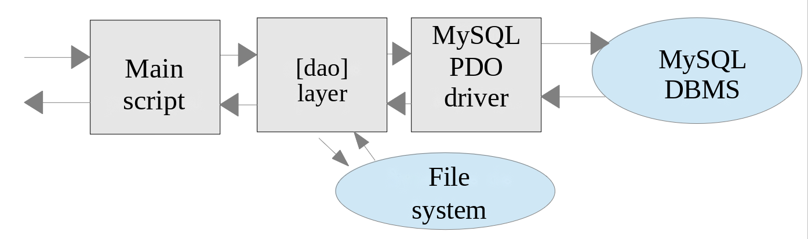

13. Ejercicio práctico – Versión 5
Ya hemos escrito varias versiones de este ejercicio. La última versión usaba una arquitectura en capas:

La capa [dao] implementa la interfaz [InterfaceDao]. Creamos una clase que implementa esta interfaz:
- [DaoTaxWithTaxAdminDataInJsonFile], que recuperaba los datos fiscales de un archivo JSON.
Implementaremos la interfaz [InterfaceDao] mediante una nueva clase, [DaoTaxWithTaxAdminDataInDatabase], que recuperará los datos de la administración tributaria de una base de datos MySQL.
13.1. Creación de la base de datos [dbtaxes-2019]
Siguiendo el ejemplo del capítulo anterior, crearemos una base de datos MySQL llamada [dbtaxes-2019], cuyo propietario será el usuario [admtaxes] con la contraseña [pwdtaxes]. Esta base de datos tendrá dos tablas:
- la tabla [tbbrackets] contendrá los tramos del impuesto;
- la tabla [tbconstants] contendrá las constantes utilizadas en el cálculo del impuesto.
El curso de PHP 7 creaba la base de datos, el usuario y las tablas con el asistente de [phpMyAdmin] y luego exportaba la estructura resultante a un archivo SQL. Aquí seguiremos el camino inverso: escribiremos directamente el script SQL [dbtaxes-2019.sql], colocándolo en la carpeta [Data] de la versión 5:
Comentarios
- Línea 7: la base de datos [dbtaxes-2019] se elimina si existe. Así, el script puede ejecutarse de nuevo para regenerar la base de datos si se eliminó o se dañó. El nombre de la base de datos contiene un guion: debe ir entre comillas invertidas ` para que MySQL no lo interprete como una resta;
- línea 8: se crea la base de datos con el juego de caracteres [utf8mb4];
- líneas 11–13: se (re)crea el usuario [admtaxes], con la contraseña [pwdtaxes], . Este usuario tiene todos los privilegios sobre la base de datos [dbtaxes-2019];
- línea 16: los comandos siguientes se aplican a la base de datos [dbtaxes-2019];
- Líneas 19–25: la tabla [tbbrackets] tiene cuatro columnas:
- [id] es un entero, la clave primaria de la tabla, y el SGBD la autoincrementará ([AUTO_INCREMENT]). Esto significa que MySQL administrará por sí mismo los valores de la clave primaria durante las inserciones: asignará el valor 1 a la clave primaria de la primera inserción, luego 2 a la siguiente, y así sucesivamente;
- [limits] es un número decimal de 10 dígitos con 2 decimales ([DECIMAL(10, 2)]). Contendrá los elementos de la columna [limits] de los tramos del impuesto;
- [coeffr] es un número decimal de 6 dígitos con 2 decimales. Contendrá los elementos de la columna [coeffR] de los tramos del impuesto;
- [coeffn] es un número decimal de 10 dígitos con 2 decimales. Contendrá los elementos de la columna [coeffN] de los tramos del impuesto;
- Líneas 28–41: la tabla [tbconstants] tiene una clave primaria [id] y una columna decimal por cada constante del cálculo del impuesto. Contendrá una sola fila.
El tipo [DECIMAL] almacena los números de forma exacta, a diferencia de los tipos reales [FLOAT] y [DOUBLE], que almacenan un valor aproximado en binario: 0.14 se almacena exactamente como 0.14.
Ejecute este script en el terminal de [Laragon] abierto en la carpeta [version-05/Data] con el comando:
Si todo sale bien, no se muestra nada. Verifique el resultado iniciando sesión como [admtaxes]:
- Línea 6: la columna [id] es la clave primaria (PRI), y MySQL administra sus valores (auto_increment).
Por supuesto, también puede abrir y ejecutar el script [dbtaxes-2019.sql] en [HeidiSQL] o [phpMyAdmin] para examinar allí la estructura de las tablas.
13.2. Organización del código
Para ilustrar mejor el papel de los distintos scripts PHP que vamos escribiendo, organizaremos el código de la versión 5 en carpetas:
- [Entities]: entidades de la aplicación, objetos intercambiados entre capas;
- [Utilities]: utilidades de la aplicación;
- [Data]: datos utilizados o producidos por la aplicación, y el script de la base de datos SQL. Aquí hemos decidido usar solo archivos JSON como archivos de texto. Estos ofrecen varias ventajas:
- son reconocidos por muchas herramientas;
- estas herramientas admiten el resaltado de sintaxis. Además, la notación JSON sigue reglas específicas. Cuando no se respetan, las herramientas señalan el error. Por ejemplo, un error difícil de detectar en un archivo de texto simple es usar la letra O mayúscula en lugar del número cero. Si en el archivo JSON se escribe por descuido ["coupleIncomeCeilingForReduction": 42O74], [VS Code] subraya el valor 42O74 en rojo (porque no es un número ni una cadena entre comillas) y la pestaña [Problems] muestra el error. Se llama así la atención del desarrollador sobre el error, y este puede corregirlo;
- [Dao]: las interfaces, traits y clases de la capa [dao];
- [Business]: la interfaz y la clase de la capa [business]. El curso de PHP 7 llamaba a esta carpeta [Métier]. Evitamos los caracteres acentuados en los nombres de carpetas y archivos: causan problemas cuando los archivos se transfieren de un sistema a otro (archivos ZIP, repositorios Git, etc.);
- [Main]: los scripts principales de la versión 5;
- [Tests]: las pruebas de la versión 5 ([PHPUnit]).
La versión 5 tiene dos objetivos distintos:
- poblar la base de datos MySQL [dbtaxes-2019] con el contenido del archivo JSON [Data/taxadmindata.json];
- implementar el cálculo del impuesto usando datos fiscales que ahora provienen de la base de datos MySQL [dbtaxes-2019].
Abordaremos estos dos objetivos por separado.
13.3. Población de la base de datos [dbtaxes-2019]
13.3.1. Objetivo
El archivo [Data/taxadmindata.json] contiene datos de la administración tributaria. Este es el archivo de la versión 4:
Nuestro objetivo es transferir estos datos a la base de datos MySQL [dbtaxes-2019] creada anteriormente.
13.3.2. Entidades
Las entidades son los objetos intercambiados entre las capas de la aplicación. Tres de ellas provienen de la versión 4 y se incluyen sin ninguna modificación:
- la excepción [TaxException];
- la clase [readonly] [TaxAdminData] que contiene los datos de la administración tributaria, construida mediante sus métodos estáticos [fromJsonFile] y [fromArray];
- la clase [readonly] [TaxPayerData] que contiene los datos de un contribuyente y los resultados de su cálculo del impuesto.
Agregamos una cuarta, la entidad [Database], que describe la base de datos.
13.3.2.1. ¿Por qué no hay una clase base [BaseEntity]?
El curso de PHP 7 introducía en este punto una clase padre, [BaseEntity], de la que derivaban todas las entidades. Se basaba en una regla: los atributos de una entidad tienen los mismos nombres que las claves del archivo JSON que encapsula. [BaseEntity] podía entonces inicializar cualquier entidad a partir de un archivo JSON o de un arreglo asociativo mediante el siguiente bucle:
Los atributos de las entidades se declaraban como [protected] (sin tipo) para que la clase padre pudiera modificarlos, y cada entidad agregaba sus propios getters y setters. No adoptamos esta solución:
- el bucle anterior crea silenciosamente un atributo dinámico cuando una clave del archivo JSON está mal escrita. Esto está obsoleto desde PHP 8.2 y está prohibido para las clases [readonly];
- cualquier capa podía modificar las entidades, mediante sus setters o el método [setFromArrayOfAttributes]. Nuestras entidades son inmutables: una capa no puede modificar accidentalmente un objeto recibido de otra capa;
- la regla “mismos nombres en el JSON y en la clase” sigue vigente, pero PHP 8 la usa directamente: la expresión [new self(...$data)] convierte las claves del arreglo en argumentos con nombre del constructor (PHP 8.1). Es PHP quien verifica entonces que no falte ninguna clave, que no haya ninguna desconocida y que cada valor sea del tipo correcto. Ya no hay código común que extraer a una clase padre.
Por último, la versión 4 ya agregó el método [fromArray] a la clase [TaxAdminData]. Veremos que este método basta para construir un objeto [TaxAdminData] a partir de los datos leídos de la base de datos. Una consecuencia importante es que la capa [business] de la versión 4 se reutilizará sin modificaciones: en el curso de PHP 7, los cambios en las entidades habían obligado a modificar la capa [business].
13.3.2.2. La entidad [Database]
La entidad [Database] se usará para encapsular los datos del siguiente archivo JSON [Data/database.json]:
Sus atributos describen las características de la base de datos MySQL [dbtaxes-2019]:
Atributo | Función |
dsn | El DSN de la base de datos |
id | el propietario de la base de datos |
pwd | su contraseña |
tableBrackets | el nombre de la tabla que contiene los tramos del impuesto |
colId / colLimits / colCoeffR / colCoeffN | los nombres de las columnas de la tabla [tableBrackets] |
tableConstants | el nombre de la tabla que contiene las constantes del cálculo del impuesto |
colHalfShareQfCeiling / colSingleIncomeCeilingForReduction / colCoupleIncomeCeilingForReduction / colHalfShareReductionValue / colSingleDiscountCeiling / colCoupleDiscountCeiling / colSingleTaxCeilingForDiscount / colCoupleTaxCeilingForDiscount / colTenPercentAllowanceMax / colTenPercentAllowanceMin | los nombres de las columnas de la tabla [tableConstants] que contienen las constantes del cálculo del impuesto |
¿Por qué listar los nombres de las tablas y columnas si ya los conocemos y es poco probable que cambien? Después del SGBD MySQL, usaremos el SGBD PostgreSQL para almacenar los datos de la administración tributaria. Sin embargo, los nombres de columnas y tablas en PostgreSQL no siguen las mismas reglas que los de MySQL. Tendremos que usar nombres diferentes. Esto también se aplica a otros SGBD. Si queremos que el código sea portable entre SGBD, es preferible usar parámetros en lugar de nombres de tablas y columnas escritos directamente en el código. En comparación con el curso de PHP 7, hemos agregado el atributo [colId], que es el nombre de la columna de clave primaria de la tabla de tramos: lo necesitaremos para volver a leer los tramos en el orden en que se insertaron.
La clase [Database] es la siguiente: [Entities/Database.php]:
Comentarios
- Línea 9: al igual que [TaxAdminData], la clase [Database] es inmutable y no se puede derivar;
- líneas 12–23: los nombres de las diez constantes del cálculo del impuesto. Estos son también los nombres de los atributos de la clase [TaxAdminData];
- líneas 26–50: el constructor privado declara, por promoción, un atributo público de tipo [string] para cada clave del archivo [database.json], con el mismo nombre;
- línea 30: el atributo [#[\SensitiveParameter]] de PHP 8.2 marca el parámetro como sensible. Si se lanza una excepción mientras se ejecuta el constructor, el valor de la contraseña no aparecerá en la pila de llamadas de la excepción (stack trace), que a menudo se escribe en archivos de registro: allí se reemplaza por un objeto [SensitiveParameterValue];
- líneas 53–68: el método estático [fromJsonFile] construye un objeto [Database] a partir de un archivo JSON:
- línea 56: la lectura y decodificación del archivo JSON están a cargo de la clase [Utilities], descrita más adelante. Estas operaciones pueden lanzar una excepción [TaxException];
- línea 58:
JSONdebe ser un objeto, es decir, un arreglo asociativo, no una lista; - línea 63: las claves del arreglo [$data] se convierten en argumentos con nombre del constructor. Si falta una clave, PHP lanza un error [ArgumentCountError]; si una clave es desconocida, un error [Error] (“Unknown named parameter”); si un valor no es una cadena, un error [TypeError]. Estos tres errores derivan de la clase [Error];
- Líneas 64–66: el error se captura y se convierte en [TaxException] con el código 21, conservando el error original ([$ex]) como excepción previa. El mensaje de error de PHP, incluido en el mensaje, especifica exactamente qué está mal;
- líneas 71–79: el método [constantColumns] devuelve el arreglo asociativo [nombre de la constante => nombre de la columna]. Para la constante [halfShareQfCeiling], el nombre de la columna está en el atributo [colHalfShareQfCeiling]. La función [ucfirst] pone en mayúscula la primera letra de una cadena, y la sintaxis [$this->{"col" . ucfirst($constant)}] hace referencia al atributo cuyo nombre es el valor de la expresión entre llaves. Este método nos ahorrará escribir diez veces un código casi idéntico en la capa [dao].
13.3.2.3. La clase [Utilities]
La versión 4 usaba la clase [Utilities] para eliminar el carácter de fin de línea de las líneas de un archivo de texto. Ahora solo usamos archivos JSON: la clase [Utilities] se encarga ahora tanto de leer como de escribir archivos JSON [Utilities/Utilities.php]:
Comentarios
- Líneas 17–30: el método [readJsonFile] lee un archivo JSON y devuelve su contenido decodificado, que puede ser de cualquier tipo ([mixed]): un objeto JSON devuelve un arreglo asociativo, mientras que un arreglo JSON devuelve una lista. El código es el que escribimos en el método [TaxAdminData::fromJsonFile] en la versión 3. Los errores se notifican mediante una [TaxException] con el código 15 (archivo ilegible) o 16 (JSON no válido);
- líneas 33–40: el método [writeJsonFile] escribe un valor en formato JSON en un archivo de texto. Las opciones de [json_encode] se combinan con el operador [|]:
- [JSON_PRETTY_PRINT] produce un JSON con sangría y fácil de leer;
- [JSON_UNESCAPED_UNICODE] escribe los caracteres acentuados tal cual (marié) en lugar de su código (marié);
- [JSON_PRESERVE_ZERO_FRACTION] escribe el número real 0.0 como 0.0 en lugar de 0: esto distingue los números reales de los enteros en el archivo de salida;
- [JSON_THROW_ON_ERROR] lanza una excepción [JsonException] si el valor no se puede codificar en JSON.
13.3.3. La capa [dao]
Ahora podemos escribir el código que transferirá los datos del archivo JSON [taxadmindata.json] a las tablas [tbbrackets, tbconstants] de la base de datos MySQL [dbtaxes-2019]. Usaremos la siguiente arquitectura:

La capa [dao] implementará la siguiente interfaz [InterfaceDao4TransferAdminData2Database]: [Dao/InterfaceDao4TransferAdminData2Database.php]:
- Línea 13: el método [transferAdminData2Database] se encarga de almacenar los datos de la administración tributaria en una base de datos.
La interfaz [InterfaceDao4TransferAdminData2Database] será implementada por la siguiente clase [DaoTransferAdminDataFromJsonFile2Database]: [Dao/DaoTransferAdminDataFromJsonFile2Database.php]:
Comentarios
Aquí aplicamos lo aprendido en el capítulo sobre MySQL.
- Línea 9: la clase [DaoTransferAdminDataFromJsonFile2Database] implementa la interfaz [InterfaceDao4TransferAdminData2Database];
- línea 12: el atributo [$database] es un objeto de tipo [Database] que encapsula los datos del archivo [database.json];
- línea 14: el atributo [$taxAdminData] es un objeto de tipo [TaxAdminData] que encapsula los datos del archivo [taxadmindata.json];
- líneas 17–22: el constructor recibe como parámetros los nombres de los archivos [database.json, taxadmindata.json] e inicializa los dos atributos. Si uno de los archivos no es válido, se lanza una excepción [TaxException] al código llamador;
- línea 26: se implementa el único método de la interfaz [InterfaceDao4TransferAdminData2Database];
- línea 31: se abre la conexión con la base de datos. Observe la notación [\PDO], que hace referencia a la clase [PDO] de PHP. En efecto, como estamos en el espacio de nombres [Application], si escribiéramos simplemente [PDO], este nombre relativo se prefijaría con el espacio de nombres actual y haría referencia, por tanto, a la clase [Application\PDO], que no existe. El método [PDO::connect] devuelve aquí un objeto de tipo [Pdo\Mysql], ya que el DSN comienza con [mysql:]. Nada en esta clase depende de MySQL: es el DSN, leído del archivo [database.json], el que determina el SGBD utilizado;
- Líneas 33–39: las tablas [tbbrackets, tbconstants] se pueblan dentro de una transacción. Los métodos [fillTableBrackets] y [fillTableConstants] lanzan una [PDOException] en cuanto algo sale mal. En ese caso, la ejecución continúa en la cláusula [catch] y la base de datos queda en su estado inicial: no hay riesgo de tener una tabla [tbbrackets] llena y una tabla [tbconstants] vacía;
- Líneas 40–47: caso en que el código lanzó una excepción. Si hay una transacción en curso, se revierte. Luego se lanza una excepción de tipo [TaxException], con el código 30, junto con el mensaje de la excepción original, que pasa a ser la excepción previa. Así, el código llamador solo tiene que manejar un tipo de excepción;
- línea 49: el procedimiento de PHP 7 cerraba la conexión dentro de una cláusula [finally] mediante la instrucción [$connection = NULL]. Esto es innecesario: la variable local [$connection] desaparece al final del método y, con ella, la conexión.
El código del método [fillTableBrackets] es el siguiente:
Comentarios
- Línea 53: el método [fillTableBrackets] recibe una conexión abierta como parámetro. También sabemos que se ha iniciado una transacción dentro de esta conexión;
- Líneas 56–57: dos atajos para evitar tener que escribir [$this->database] y [$this->taxAdminData] en todo el código. Son copias de referencias a objetos, no copias de los objetos mismos;
- línea 59: se elimina el contenido actual de la tabla de tramos (“brackets”). El nombre de la tabla se inserta en la cadena con la sintaxis ["$database->tableBrackets"]: PHP reemplaza la expresión por el valor del atributo;
- Líneas 61–64: se prepara la inserción de filas en la tabla. Aquí se usan los nombres de tabla y de columnas proporcionados por el atributo [$database]. Los nombres de tablas y columnas no pueden ser parámetros de una sentencia preparada; solo pueden serlo los valores. Por eso se insertan en el texto de la sentencia SQL. Provienen de un archivo de configuración y no de un usuario: no hay riesgo de inyección SQL;
- Líneas 66–72: la sentencia de inserción preparada se ejecuta tantas veces como sea necesario, una por cada tramo del impuesto. [$i] es el número del tramo, que sirve de índice en los arreglos [coeffR] y [coeffN].
El código del método [fillTableConstants] es el siguiente:
Comentarios
- Línea 76: el método [fillTableConstants] también recibe una conexión abierta en la que hay una transacción en curso;
- Línea 81: se vacía la tabla [tbconstants] ;
- línea 83: el arreglo [nombre de la constante => nombre de la columna], por ejemplo, [["halfShareQfCeiling" => "halfShareQfCeiling", ...]];
- línea 85: los nombres de los parámetros de la sentencia preparada: [[":halfShareQfCeiling", ...]]. Son los nombres de las constantes precedidos de dos puntos;
- líneas 86–89: preparación del comando SQL de inserción. La función [implode] construye la lista de columnas y la lista de parámetros, separadas por comas. Esto da como resultado el comando [insert into tbconstants (halfShareQfCeiling, ...) values (:halfShareQfCeiling, ...)]. El curso de PHP 7 escribía todo este comando, columna por columna, en unas veinte líneas;
- líneas 91–94: el arreglo de valores de los parámetros [nombre de la constante => valor]. La sintaxis [$this->taxAdminData->$constant] especifica el atributo del objeto [TaxAdminData] cuyo nombre es el valor de la variable [$constant];
- Línea 96: ejecución de la sentencia insert. Solo hay una fila que insertar.
13.3.4. El script principal
El script principal [Main/MainTransferAdminDataFromJsonFile2MySQLDatabase.php] se apoya en la capa [dao] para realizar la transferencia de datos:
Comentarios
- Líneas 10–15: se cargan las clases e interfaces necesarias para la transferencia. Las rutas son relativas a la carpeta del script ([Main]): [__DIR__ . "/../Entities"] hace referencia a la carpeta vecina [Entities];
- Líneas 18–19: las rutas de los dos archivos JSON, que también son relativas a la carpeta del script. El curso de PHP 7 usaba rutas relativas a la carpeta actual (["../Data/database.json"]): el script solo funcionaba si se ejecutaba desde la carpeta [Main];
- línea 23: se instancia la capa [dao] pasando al constructor los nombres de los dos archivos JSON;
- línea 25: se realiza la transferencia de datos;
- líneas 27–29: se muestran el código y el mensaje de la excepción. El curso de PHP 7 usaba aquí la función [utf8_encode], que está obsoleta desde PHP 8.2 y es innecesaria, ya que todos nuestros mensajes están en UTF-8.
Cuando ejecutamos este script en un terminal abierto en la carpeta [Main], obtenemos el siguiente resultado:
y el siguiente contenido en la base de datos:
- columna [id]: los valores asignados por MySQL a la clave primaria. La numeración comienza en 1. Si volvemos a ejecutar el script, las filas se eliminan y luego se reinsertan, y MySQL continúa la numeración (6, 7…): el valor de una clave autoincremental nunca se reutiliza;
- los números tienen dos decimales, de acuerdo con el tipo de datos [DECIMAL(10, 2)] de las columnas.
La opción [\G] al final del comando SQL muestra cada fila verticalmente, una columna por línea de pantalla, lo que es más fácil de leer para una tabla con muchas columnas:
13.4. Cálculo del impuesto
13.4.1. Arquitectura
La versión 4 de la aplicación de cálculo del impuesto usaba una arquitectura en capas:
La capa [dao] implementa la interfaz [InterfaceDao]. La clase [DaoTaxWithTaxAdminDataInJsonFile] de la versión 4 recuperaba los datos fiscales de un archivo JSON. Implementaremos la interfaz [InterfaceDao] mediante una nueva clase, [DaoTaxWithTaxAdminDataInDatabase], que recuperará los datos de la administración tributaria de la base de datos MySQL. La capa [dao], como antes, escribirá los resultados y errores en archivos de texto y también recuperará los datos de los contribuyentes de un archivo de texto. Solo que esta vez, esos archivos de texto serán archivos JSON. Además, sabemos que si seguimos respetando la interfaz [InterfaceDao], la capa [business] no necesitará modificarse.

13.4.2. La entidad [TaxPayerData]
La clase [TaxPayerData] de la versión 4 encapsula los datos de un contribuyente ([married, children, salary]) y los resultados de su cálculo del impuesto ([tax, surcharge, discount, reduction, rate]). Se conserva tal cual. Los datos de los contribuyentes están ahora en el siguiente archivo JSON [Data/taxpayersdata.json]:
Las claves de los objetos JSON son los nombres de los atributos de la clase [TaxPayerData]. Observe lo siguiente:
- línea 8: el contribuyente n.º 1 (la numeración comienza en 0) es incorrecto: sus tres datos son inválidos;
- línea 14: el número de hijos del contribuyente n.º 2 se da como una cadena. Lo aceptaremos;
- los otros once contribuyentes son los de las pruebas oficiales de la administración tributaria, que se usan desde la versión 1.
13.4.3. La capa [dao]
13.4.3.1. La interfaz [InterfaceDao]
La interfaz [InterfaceDao] de la versión 4 se incluye sin modificaciones [Dao/InterfaceDao.php]:
Los métodos [getTaxPayersData] y [saveResults] aceptan nombres de archivo: nada indica que se trate de archivos de texto simples o de archivos JSON. Por lo tanto, la interfaz sigue siendo válida.
13.4.3.2. El trait [TraitDao]
El trait [TraitDao] implementa los métodos [getTaxPayersData] y [saveResults] de la interfaz [InterfaceDao]. Como pasamos de archivos de texto simples a archivos JSON, debemos reescribirlo como [Dao/TraitDao.php]:
Comentarios
- Líneas 13–44: el método [getTaxPayersData] recibe los siguientes parámetros:
- [$taxPayersFilename]: el nombre del archivo JSON que contiene los datos de los contribuyentes [taxpayersdata.json];
- [$errorsFilename]: el nombre del archivo JSON que contiene los errores [errors.json];
- Línea 17: el contenido del archivo JSON con los datos de los contribuyentes se decodifica en el arreglo [$taxpayers]. Si el archivo JSON resulta inutilizable, se lanza una excepción [TaxException];
- línea 18: el contenido debe ser un arreglo JSON, es decir, una lista de PHP. De lo contrario, se lanza una excepción con el código 17;
- línea 22: el arreglo [$taxPayersData] contendrá los datos de los contribuyentes encapsulados en objetos de tipo [TaxPayerData];
- línea 24: los errores se acumularán en el arreglo [$errors];
- líneas 26–39: construcción del arreglo [$taxPayersData]. Antes de encapsularse en un objeto [TaxPayerData], los datos son validados por el método [check], que devuelve una lista de atributos no válidos, o una lista vacía si los datos son válidos:
- Líneas 30–34: caso en que los datos son válidos. Se crea un nuevo objeto [TaxPayerData] y se agrega al arreglo [$taxPayersData]. El estado civil se convierte a minúsculas, y el número de hijos y el salario se convierten a enteros: [(int) "2"] vale 2;
- Línea 37: caso en que los datos no son válidos. El mensaje de error incluye el número del contribuyente incorrecto en el arreglo JSON para que el usuario pueda localizarlo, y luego el error se agrega al arreglo [$errors];
- Línea 41: los errores encontrados se registran en el archivo JSON [$errorsFilename]. El curso de PHP 7 escribía incorrectamente una cadena JSON, una por línea: con varios errores, el archivo no era un archivo JSON válido. Aquí escribimos un arreglo JSON con los errores;
- línea 43: devolvemos el arreglo de objetos [TaxPayerData] construidos: ese era el propósito del método;
- líneas 47–70: el método privado [check] verifica la validez de los datos de un contribuyente. El parámetro [$taxpayer] es de tipo [mixed]: un elemento del arreglo JSON puede ser cualquier cosa (un objeto, un número, una cadena, etc.). El método reúne los atributos no válidos en el arreglo [$errors] en forma de arreglos [incorrect attribute => value]:
- línea 50: el elemento debe ser un objeto JSON;
- línea 55: el operador [??] (fusión de null) devuelve el valor de [$taxpayer["married"]] si existe y no es [null], y [null] en caso contrario. Esto evita la advertencia que provocaría una clave ausente;
- líneas 56–58: el estado civil debe ser una cadena que represente “yes” o “no”, sin distinguir mayúsculas de minúsculas y sin tener en cuenta los espacios;
- líneas 61–68: el número de hijos y el salario deben ser enteros positivos o cero, dados como un número JSON (2) o como una cadena ("2"). Una cadena debe estar formada por dígitos, opcionalmente rodeados de espacios: eso es lo que verifica la expresión regular [/^\s*\d+\s*$/]. Observe la comparación [preg_match(...) === 1]: la función [preg_match] devuelve 1 si la cadena coincide con el patrón, 0 en caso contrario, y [false] si ocurre un error;
- Líneas 74–78: la implementación del método [saveResults] de la interfaz [InterfaceDao]. El arreglo de objetos [TaxPayerData] se almacena directamente en formato JSON: la función [json_encode] convierte un objeto en un objeto JSON cuyas claves son los nombres de sus atributos públicos. El curso de PHP 7 construía la cadena JSON a partir del arreglo “a mano”, concatenando las cadenas JSON de los objetos separadas por comas y agregando corchetes.
13.4.3.3. La clase [DaoTaxWithTaxAdminDataInDatabase]
La clase [DaoTaxWithTaxAdminDataInDatabase] implementa la interfaz [InterfaceDao] de la siguiente manera: [Dao/DaoTaxWithTaxAdminDataInDatabase.php]:
Comentarios
- línea 6: conservamos el espacio de nombres ya utilizado para las demás clases de la aplicación;
- línea 9: la clase [DaoTaxWithTaxAdminDataInDatabase] implementa la interfaz [InterfaceDao];
- línea 12: se importa el trait [TraitDao]. Sabemos que este trait implementa una parte de la interfaz. El único método que queda por implementar es [getTaxAdminData], que simplemente devuelve el atributo privado [$taxAdminData]. Podemos deducir que el constructor deberá inicializar este atributo. Ese es su único propósito;
- línea 20: el constructor recibe como único parámetro el nombre del archivo JSON [database.json], que define la base de datos MySQL [dbtaxes-2019];
- Línea 23: el archivo JSON se utiliza para crear un objeto de tipo [Database], que se almacena en el atributo [$database]. Si el archivo JSON no pudo procesarse correctamente, se lanza una excepción [TaxException];
- líneas 28–33: se abre la conexión con la base de datos. El cuarto parámetro establece el modo predeterminado de lectura de las filas: arreglos asociativos de tipo [column => value];
- línea 35: se inicia una transacción. No es estrictamente necesaria porque solo se ejecutarán dos comandos SQL, y estos comandos no modifican la base de datos. Sin embargo, se hace para aislar el programa de los demás usuarios de la base de datos: ambas tablas se leen en el mismo estado, aunque otro programa las modifique al mismo tiempo;
- Línea 37: la tabla de tramos impositivos [tbbrackets] se lee con el método privado [getBrackets]. Este método devuelve el arreglo [["limits" => [...], "coeffR" => [...], "coeffN" => [...]]];
- línea 39: la tabla de constantes de cálculo [tbconstants] se lee con el método privado [getConstants]. Devuelve el arreglo [constant name => value];
- Línea 41: si llegamos a esta línea, significa que todo salió bien. Por lo tanto, confirmamos la transacción (commit);
- líneas 42–49: si llegamos a este punto, significa que ocurrió una excepción. Por lo tanto, revertimos la transacción (rollback) si había una en curso. Luego, para garantizar excepciones coherentes, relanzamos el error como una excepción de tipo [TaxException] con el código 30;
- línea 52: la expresión [[...$brackets, ...$constants]] fusiona los dos arreglos asociativos en uno solo, que tiene exactamente las trece claves esperadas por el método [TaxAdminData::fromArray]. Este método verifica los datos leídos de la base de datos, igual que verificaba los datos del archivo JSON, y los convierte en números reales. El curso de PHP 7 inicializaba el objeto [TaxAdminData] atributo por atributo, con diez llamadas a setters.
El método [getBrackets] es el siguiente:
Comentarios
- línea 57: el método recibe como parámetro una conexión abierta en la que hay una transacción en curso;
- Líneas 62–65: la instrucción SELECT se prepara y luego se ejecuta. La cláusula [order by] sobre la clave primaria garantiza que los tramos se lean en el orden en que se insertaron. El comando del curso de PHP 7 no tenía esta cláusula y dependía del orden en que MySQL devolvía las filas, que no está garantizado;
- línea 68: se leen de una vez todas las filas del resultado. Esto produce un arreglo de arreglos asociativos, por ejemplo, [[["limits" => "9964.00", "coeffr" => "0.00", "coeffn" => "0.00"], ...]]. Observe que los valores de las columnas de tipo [DECIMAL] se devuelven como cadenas de caracteres: PHP no tiene un tipo decimal exacto, y el controlador no los convierte en [float], lo que provocaría una pérdida de precisión. El método [TaxAdminData::fromArray] se encargará de la conversión;
- Líneas 70–74: la función [array_column] extrae una columna de un arreglo de arreglos asociativos: [array_column($brackets, "limits")] devuelve [["9964.00", "27519.00", ...]].
El método privado [getConstants] es el siguiente:
Comentarios
- línea 82: el arreglo [constant name => column name];
- líneas 84–86: el comando SELECT para las diez columnas se prepara y luego se ejecuta. Observe las llaves en [{$this->database->tableConstants}]: sin ellas, PHP interpretaría solo [$this->database] dentro de la cadena;
- Línea 89: la tabla tiene una sola fila, que se lee con el método [fetch]. Este método devuelve [false] si no hay ninguna fila. El operador [?:] devuelve su operando izquierdo si se evalúa como verdadero, y su operando derecho en caso contrario: [$row] se evalúa, por lo tanto, como un arreglo vacío si la tabla está vacía;
- línea 91: para cada constante, buscamos el valor de su columna en [$row]. La función [array_map], cuando se aplica a un solo arreglo, conserva sus claves: obtenemos el arreglo [constant name => value]. Si la tabla está vacía, todos los valores son [null], y el método [TaxAdminData::fromArray] informará un valor no válido.
Observe que la clase no depende del SGBD MySQL. Es el archivo [database.json] el que establece el SGBD utilizado, mediante el DSN de la base de datos.
13.4.4. La capa [business]

- Acabamos de implementar la capa [dao] [3];
- como respetamos la interfaz [InterfaceDao], la capa [business] [2] puede permanecer sin cambios. Sin embargo, el curso de PHP 7 tuvo que modificarla porque también había cambiado las entidades intercambiadas entre las capas: el método [executeBatchTaxes] utilizaba los setters de la clase [TaxPayerData] de la versión 4, que habían sido eliminados. Aquí, las entidades no han cambiado.
Por lo tanto, la interfaz [InterfaceBusiness] y la clase [Business] de la versión 4 se incluyen sin ninguna modificación en la carpeta [Business]. Recordemos el método [executeBatchTaxes]:
- línea 192: la capa [business] desconoce que los datos de los contribuyentes ahora provienen de un archivo JSON: solicita los datos a la capa [dao] y recibe un arreglo de objetos [TaxPayerData], como en la versión 4;
- Línea 201: del mismo modo, desconoce que los resultados se guardan en formato JSON.
13.4.5. El script principal

- Acabamos de implementar las capas [dao] [3] y [business] [2];
- nos falta escribir el script principal [1].
El script principal [Main/MainCalculateTaxWithTaxAdminDataInMySQLDatabase.php] es similar al de la versión 4:
Comentarios
- líneas 10–19: carga de todos los archivos necesarios para calcular el impuesto;
- líneas 22–25: los nombres de los distintos archivos JSON de la aplicación;
- línea 29: construcción de la capa [dao];
- línea 31: construcción de la capa [business];
- línea 33: llamada al método [executeBatchTaxes] de la capa [business].
Resultados
La aplicación genera dos archivos JSON en la carpeta [Data]:
- [results.json]: los resultados de los distintos cálculos de impuestos;
- [errors.json]: que informa los errores encontrados en el archivo JSON [taxpayersdata.json].
El archivo [errors.json] es el siguiente:
Esto significa que, en [taxpayersdata.json], la entrada n.º 1 de la tabla de contribuyentes es incorrecta, y explica por qué. El archivo de resultados [results.json] es el siguiente:
1 2 3 4 5 6 7 8 9 10 11 12 13 14 15 16 17 18 19 20 21 22 23 24 25 26 27 28 29 30 31 32 33 34 35 36 37 38 39 40 41 42 43 44 45 46 47 48 49 50 51 52 53 54 55 56 57 58 59 60 61 62 63 64 65 66 67 68 69 70 71 72 73 74 75 76 77 78 79 80 81 82 83 84 85 86 87 88 89 90 91 92 93 94 95 96 97 98 99 100 101 102 103 104 105 106 107 108 109 110 111 112 | |
Observe que el contribuyente n.º 2 del archivo [taxpayersdata.json], cuyo número de hijos era la cadena "2", figura con 2 hijos en los resultados (línea 14): la capa [dao] convirtió la cadena en un entero. Estos resultados son coherentes con los de la versión 4.
13.5. Pruebas con [PHPUnit]
Como hicimos con la versión 4, escribiremos pruebas con [PHPUnit] para la versión 5. Se encuentran en la carpeta [version-05/Tests].
13.5.1. Prueba de la capa [dao]
La prueba [Tests/DaoTest.php] es la siguiente:
1 2 3 4 5 6 7 8 9 10 11 12 13 14 15 16 17 18 19 20 21 22 23 24 25 26 27 28 29 30 31 32 33 34 35 36 37 38 39 40 41 42 43 44 45 46 47 48 49 50 51 52 53 54 55 56 57 58 59 60 61 62 63 64 65 66 67 68 69 70 71 72 73 74 75 76 77 78 79 80 81 82 83 84 85 86 87 88 89 90 91 92 93 94 95 96 97 98 99 100 101 102 103 104 105 106 107 108 109 110 111 112 113 114 115 116 117 118 119 120 121 122 123 124 125 126 127 128 129 130 131 132 133 134 135 136 137 | |
Comentarios
- líneas 21–30: definición del entorno de pruebas. Cargamos los archivos de las dos capas [dao] de la versión 5: la capa de transferencia y la capa de cálculo de impuestos;
- líneas 43–49: antes de cada prueba, construimos la capa [dao] a partir del archivo [Data/database.json], igual que lo hace el script principal;
- línea 60: el método [testTaxAdminData] es idéntico al de la versión 4. Sin embargo, esta vez los datos probados se leyeron de la base de datos;
- Líneas 81–90: probamos la transferencia del archivo JSON a la base de datos y luego volvemos a leer la base de datos con una nueva capa [dao]. El objeto [TaxAdminData] resultante debe ser igual ([assertEquals]) al construido a partir del archivo JSON. Esta prueba supone que la transferencia cargó correctamente en la base de datos los datos del archivo [taxadmindata.json]: no modifica los datos esperados por las demás pruebas;
- líneas 93–101: tres descripciones incorrectas de la base de datos: un archivo inexistente (código 15), un archivo llamado [database-incomplete.json] al que le falta la clave [colCoeffN] (código 21), y un archivo llamado [database-wrong-pwd.json] con una contraseña incorrecta (código 30). Los dos últimos archivos se encuentran en la carpeta [Tests/data];
- líneas 104–111: verificamos que una capa [dao], creada con una descripción incorrecta, lance una excepción [TaxException] con el código de error correcto;
- líneas 114–128: lectura de los datos de los contribuyentes desde el archivo JSON. Verificamos el número de contribuyentes recuperados y el contenido del primer y del último registro, y luego el contenido exacto del archivo de errores;
- Línea 131: un archivo de contribuyentes inexistente debe provocar una excepción con el código 15.
13.5.2. Prueba de la capa [business]
La prueba [Tests/BusinessTest.php] corresponde a la versión 4. Solo cambia el entorno de pruebas:
- Línea 10: la clase de la capa [dao] utilizada;
- líneas 18–27: los archivos cargados, los del script principal [MainCalculateTaxWithTaxAdminDataInMySQLDatabase];
- línea 41: la capa [business] se construye sobre una capa [dao] que lee la base de datos.
El proveedor de datos [taxpayers] y el método [testCalculateTax] son los de la versión 4.
13.5.3. Ejecución de las pruebas
El SGBD MySQL debe estar iniciado ([Laragon] / Start All). Las pruebas se ejecutan en una terminal abierta en la carpeta [php8-oct-2026]:
Las 18 pruebas pasan: 7 pruebas de la capa [dao] (incluidas 3 del proveedor [invalidDatabases]) y 11 pruebas de la capa [business].